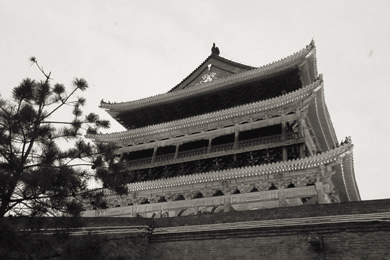
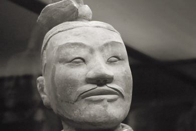

Xian: City at the centre of history
Xian, located in central-northwest China, is a living history book of Chinese culture. Called Chang'an (meaning the eternal city) in ancient times, it is one of the birthplaces of the ancient Chinese civilization in the Yellow River Basin area. As the eastern terminal of the Silk Road and the site of the famous Terra Cotta Warriors of the Qin Dynasty, the city is a nexus of Western and Asian cultures . More than 3,000 years of history including over 1,100 years as the capital city of ancient dynasties, have endowed Xian with an amazing historical heritage. Tourists marvel at the numerous historical sites and cultural relics in and around the city.
You don’t get a sense of this until you approach the walls of the old city. As our taxi rounded the corner of the street, the walls appeared seemingly out of nowhere. As we drove through the West gate of the old city, along East Street, we were transported back to a time of ancient Chinese dynasties, Muslim culture and the silk trade between China and the West.
Directly in front of us, the Drum Tower (see photo) rose majestically in an evening sky filled with darting swallows. To our right, across a huge public square, rose the Bell Tower. As we stepped out of our cab at the foot of the Drum Tower we were assaulted by the aromas wafting along Bei Da Jie street which contains innumerable restaurants and BBQ stands running the length of the street.
Outside of the city, up against the mountains is the site of one of the most incredible accidental archeological finds in China: The pits containing the Terra Cotta Warriors. In the West we only have a cursory knowledge of the Warriors. It is only when you stand at the foot of the pit which is over 200 meters long and 100 meters wide and see the warriors standing in formation that the scale and numbers of the figures uncovered is overwhelming.
To the north is another accidental archaeological find: the tomb of the Emperor. Though yet to be excavated, the lay of the land from Lishan to Mount Hua is shaped dragon-like according to traditional Chinese geomancy. The imperial tomb, marked with a simple grave marker, is at the eye of the dragon.